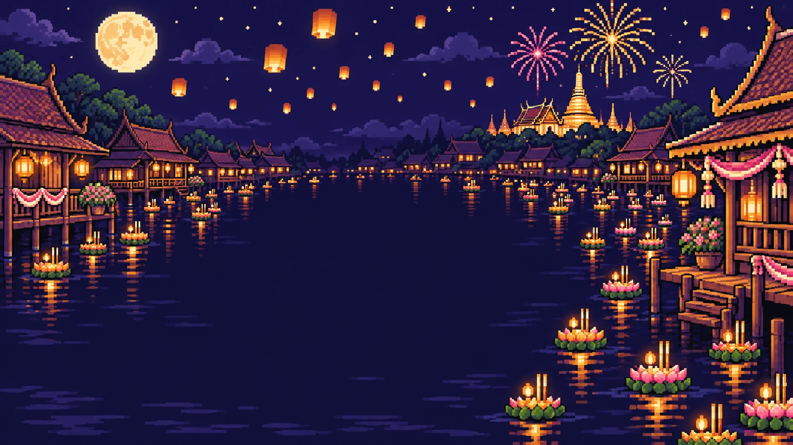
READING-LITERACY GAME · THAI GRADE 9
KapiBarian
คืนก่อนลอยกระทง
A card-battle RPG for Grade 9 readers, where the only weapon is a line from the text.
Sila Ngamsangiam · Arnav Parihar · Tanat Dhammaraks · Tanakrit Kasemsawat
WHO IT IS FOR
The player and the mission
Thai Grade 9 students in public schools, playing in a laptop browser. Three short chapters, one for each PISA 2018 reading process.
THE MISSION, IN ONE SENTENCE
A rumor says the canal is poisoned and tomorrow’s Loy Krathong is cancelled; find out what is true before the festival, using only what the texts say.
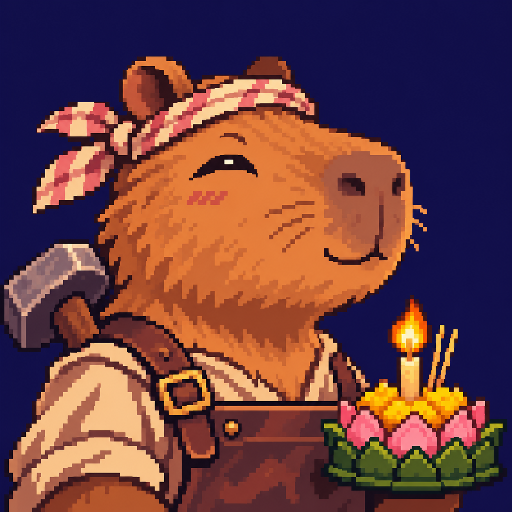
Kapi, a wandering card-smith. His cards only work when forged from true words.
18
cards across six fights
~5 min
estimated play per chapter
THE RULE FROM THE BRIEF
A player must not be able to win without reading.
No reward for speed, none for repeated clicking. Every mechanic we kept had to pass this test, and several we liked did not.
THE STORY
One rumor, three places
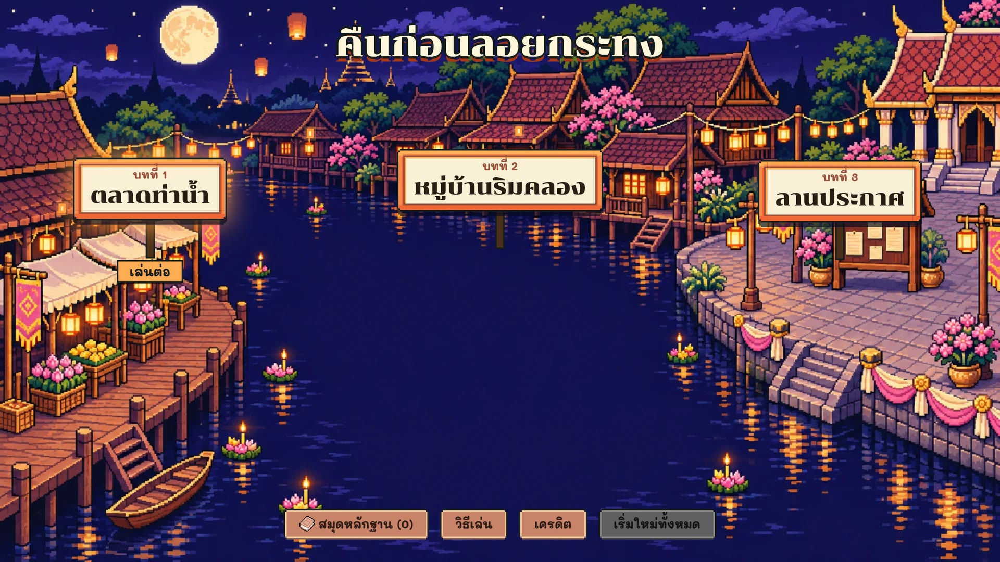
1 · ตลาดท่าน้ำ, the pier market
A notice, a boat schedule, a water-test table. The water was tested and nothing toxic was found.
2 · หมู่บ้านริมคลอง, the village
A boat vendor’s account and a workshop diary. Krathong dye turned the water green.
3 · ลานประกาศ, the town board
A viral post, a purifier advert, the health office notice. The purifier seller started the rumor.
Each chapter’s answer becomes the next chapter’s question, and every chapter still makes sense played alone.
THE CORE LOOP
One turn: forge and fire
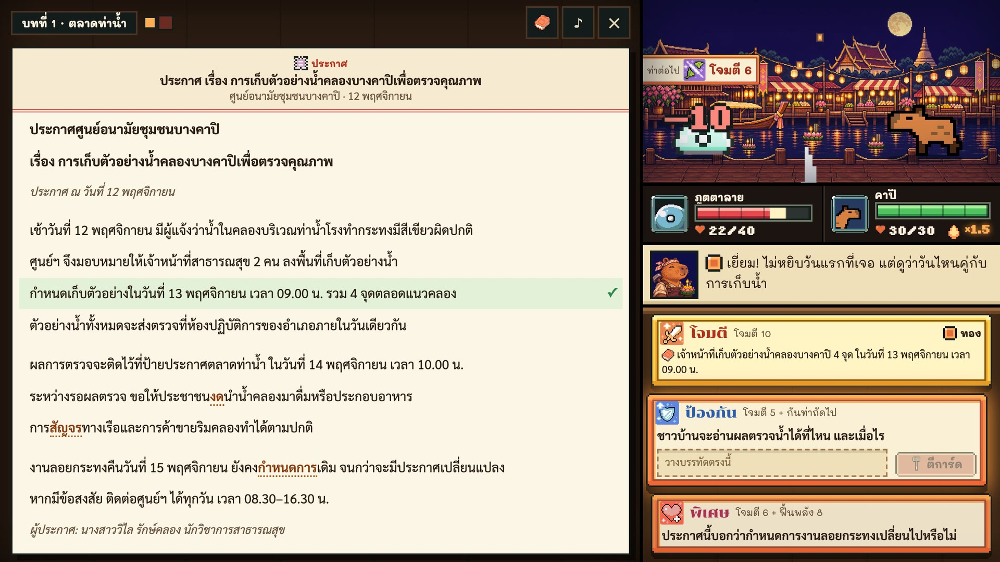
1
Read the ghost’s next move: an attack, or a heavy hit worth blocking.
2
Pick a blank card: strike, block or heal. Each one asks a question.
3
Drag in the line that answers it. The text stays whole on screen.
4
Forge. A gold card hits at once. A wrong line cracks the card and the ghost gets its hit.
Gold cards in a row build a streak. Accuracy is rewarded and speed never is: there is no timer anywhere in the game.
ONE ENGINE, THREE GAMES
A card shape for each reading process
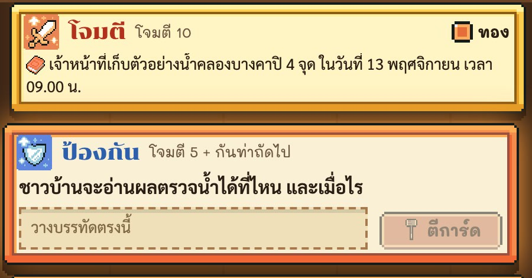
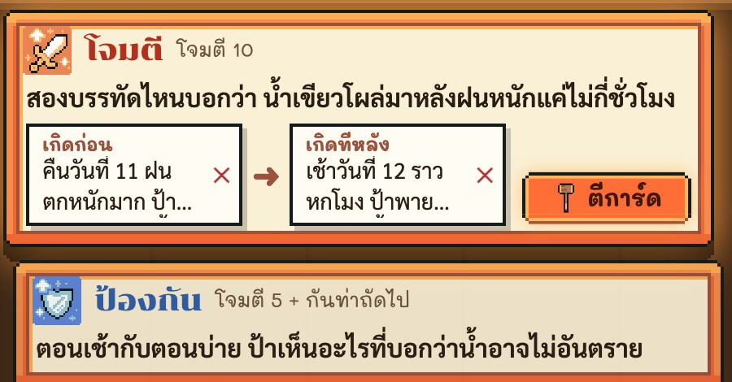
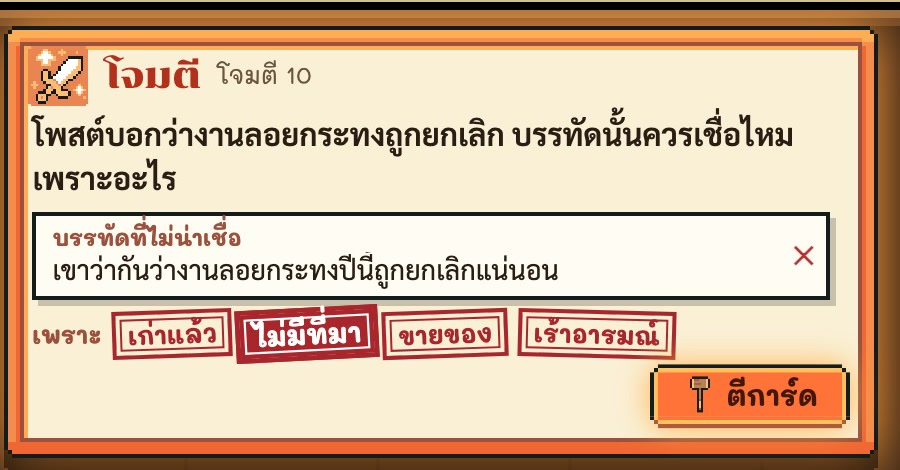
CHAPTER 1 · LOCATE
CHAPTER 2 · UNDERSTAND
CHAPTER 3 · EVALUATE
Strike card
Chain card
Verdict card
One slot. Pick the right document first, then the single line that answers.
Two slots, cause and effect. It forges only if the two lines truly connect.
One slot plus a stamp. Reject a line and say why it should not be trusted.
Guessing gets harder each chapter: one line, then a pair of lines, then a line plus a reason.
THE BOSSES
Three bosses, three reading habits
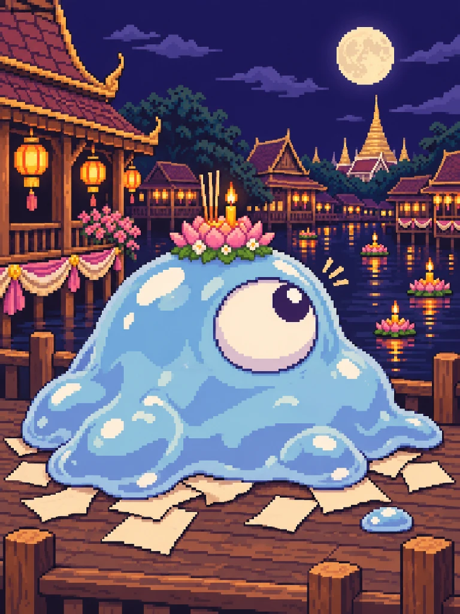
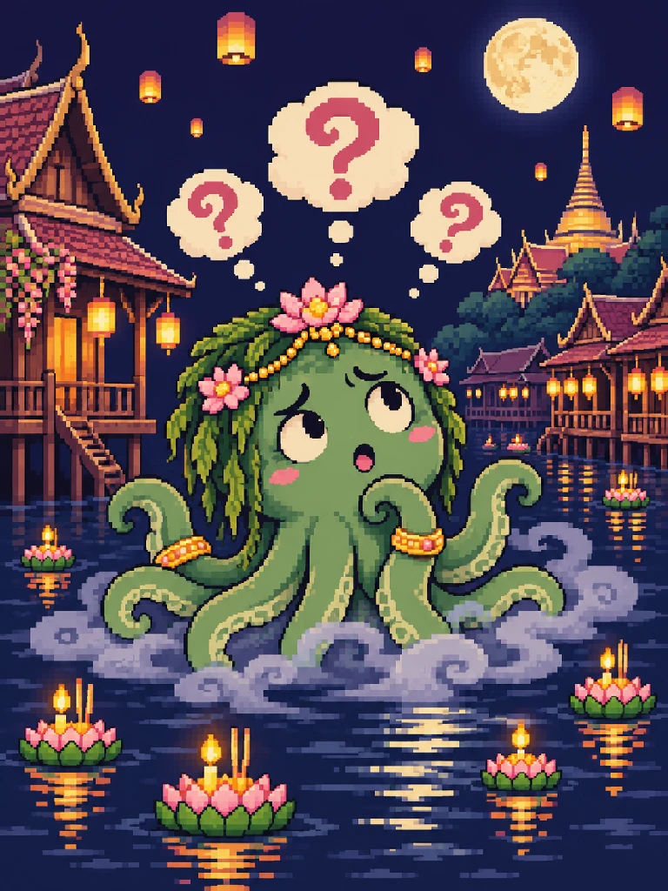
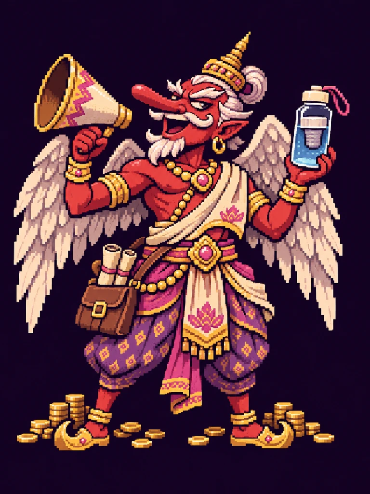
พญาอ่านข้าม
จอมด่วนสรุป
เจ้าข่าวลือ
The Skimmer. Its eye skips over lines; you beat it by finding the exact one.
The Conclusion-Jumper. You beat it by showing which cause led to which effect.
The Rumor King, who sells water purifiers. You beat him by judging the source.
PISA 2018 ALIGNMENT
What each chapter asks a reader to do
| Reading process | Chapter and texts | Card | To forge it, the player must |
|---|
| Locate information: retrieve a detail; search and select a text | 1 · Pier market. A notice, a boat schedule, a water-test table | Strike, one slot, after a scroll pick | Choose the right document from its title, date and author, then find the one line that answers |
| Understand: integrate and infer | 2 · Village. A vendor’s account, a workshop diary | Chain, two slots | Join a cause and an effect that no single line states |
| Evaluate and reflect: credibility, conflicting claims | 3 · Town board. A viral post, a purifier advert, the health office notice | Verdict, one slot plus a stamp | Reject a line from one of two texts that disagree, and stamp the reason: outdated, no source, selling something, or emotive language |
We rejected a single card shape for all three chapters: Understand and Evaluate would have collapsed into Locate.
DEMO
A 75-second walkthrough
LIVE DEMO
Chapter 1, played live
Four moments to watch
1
The scroll pick. The player chooses a source from its title, date and author before reading it.
2
A wrong line, on purpose. The card cracks and Kapi asks a question instead of giving the answer.
3
The boon. Before the boss, the player chooses their own support.
4
The result screen. No score, only how each card was found.
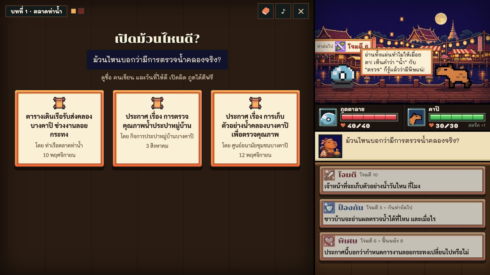
kapibarian.vercel.app
LEARNING THEORY
Where the theory sits in the mechanics
| Area | Idea we used | Mechanic that carries it |
|---|
| Cognition | Scaffolding in the zone of proximal development (Vygotsky; Wood, Bruner and Ross). Cognitive load (Sweller) | A three-step hint ladder. Kapi’s demo card in the first fight, none against the boss. One card open at a time, one idea per speech bubble |
| Motivation | Self-determination: autonomy and competence (Deci and Ryan). Growth mindset (Dweck) | The player chooses card order and a boon. The Campfire replaces game over. The result screen has no score |
| Language and literacy | Comprehensible input (Krashen). Vocabulary learned in context | Real text types that grow from about 60 to 130 words. Free context glosses on harder words |
| Game-based learning | Intrinsic integration (Habgood and Ainsworth). Feedback that explains | Damage comes only from the correct line. Every crack gets a reason, never just a mark |
The next four slides take one mechanic from each row.
COGNITION
Help that narrows and never reveals
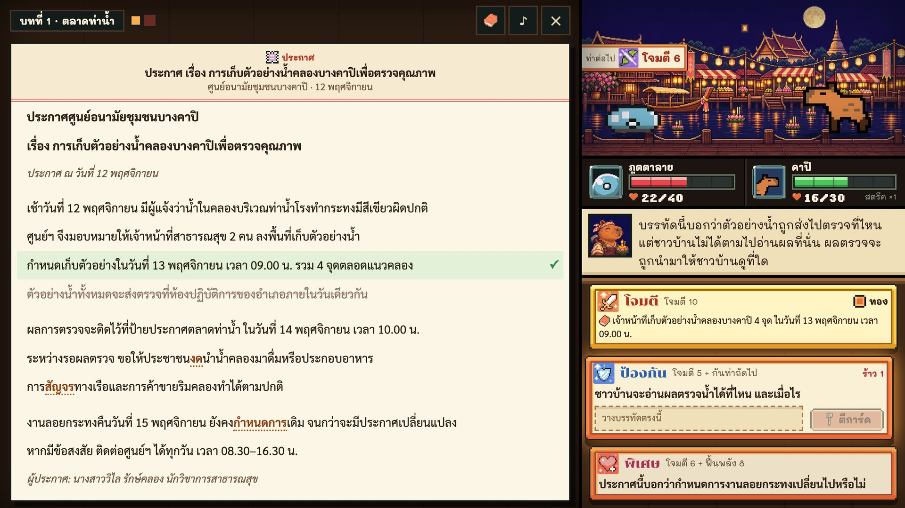
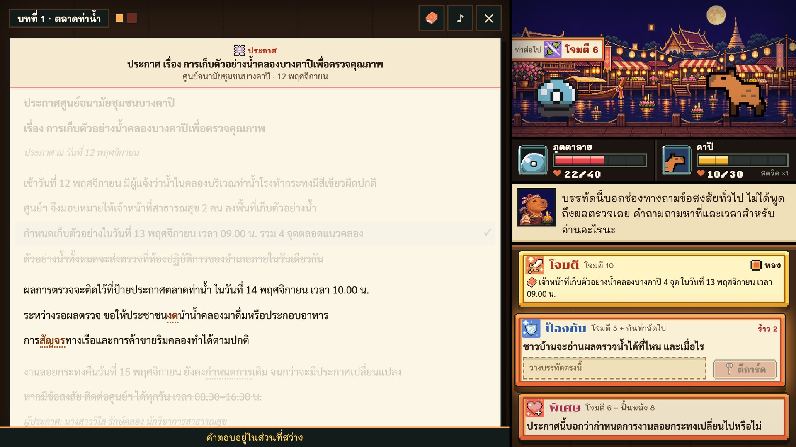
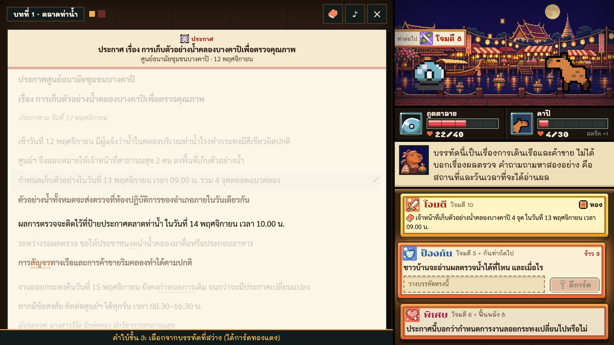
First crack
Second crack
Third crack
Kapi says why that line misses, then asks a guiding question.
The text dims except the section that holds the answer.
Three lines stay lit. The card forges bronze, at half damage.
Every crack costs HP, so help is always available and never free. Support also fades: Kapi forges a demo card in a chapter’s first fight and none against its boss.
MOTIVATION
Choice, competence and a way back
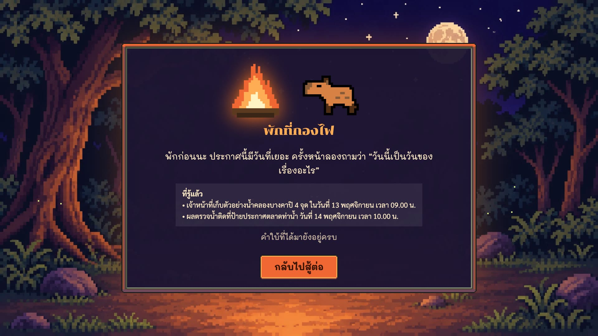
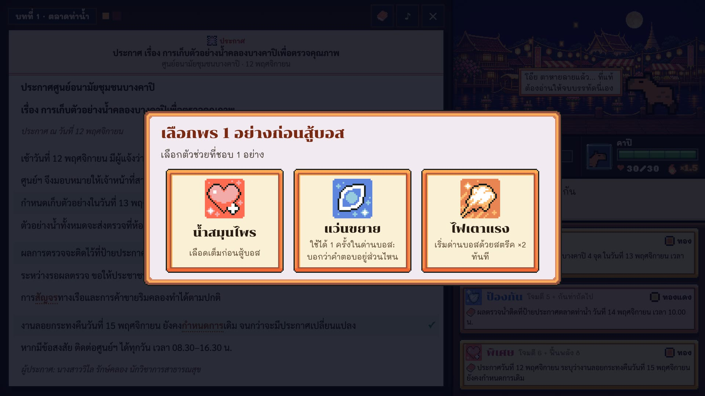
The Campfire
The boon
At 0 HP Kapi rests, lists the facts already found, and the fight resumes with every hint kept. There is no game over.
Before each boss the player picks one: a full heal, a magnifier that lights the right section once, or a head-start streak.
A player who is losing gets the facts back and another attempt. A player who is winning gets a choice about what comes next.
LANGUAGE AND LITERACY
Real texts, and words met in context
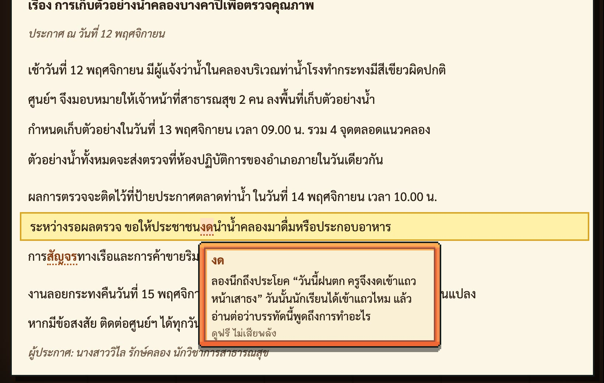
Real formats
Notice, table, diary, online post, advert, news clipping. Each is styled as the document it is.
Texts that grow
About 60–80 words against a ghost, 100–130 against a boss. Each is a small step up from the last.
Context glosses
Tapping an underlined word shows it in an easier sentence and points at the clue nearby. It costs no HP.
The reading text is never set in the pixel font. Legibility is the point of the game.
GAME-BASED LEARNING
The reading is the attack
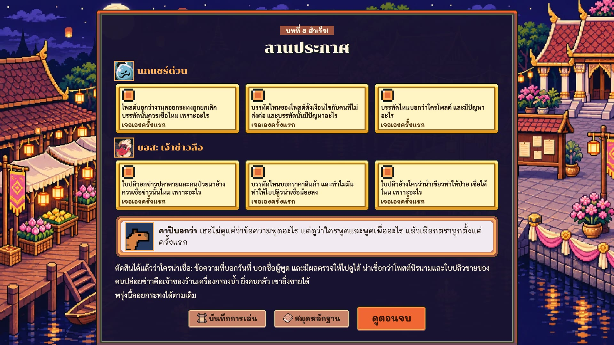
One action, not two
Damage comes only from the correct line, so the fun part and the learning part are the same move.
Feedback that teaches
The result screen shows how each card was found and names one reading habit to keep or change.
No score, timer or coins
The reward is the Evidence book filling with the facts of the mystery.
We rejected coins and a shop (they reward winning, not reading) and XP levels (no link to what was read).
EVIDENCE · GUESS-ONLY RUNS
What happens to a player who never reads
24
chapter runs with every choice made at random
4
Campfire visits per chapter, median (range 2 to 7)
111
of 144 cards came out bronze, at half damage
3
of 144 cards were right on the first try
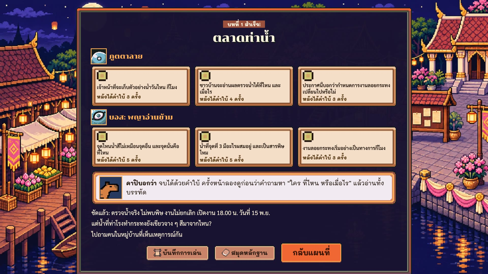
A random run’s result screen: six bronze cards, each marked “after 3 to 5 hints”.
Every run still finished its chapter. The third hint lets a struggling reader through, so it lets a guesser through too. The game does not hide it: the result screen says so on every card.
Scripted bot choosing random documents, lines and stamps; 8 runs per chapter; 22 Nov 2026. Not a human playtest.
ITERATION
What changed after feedback
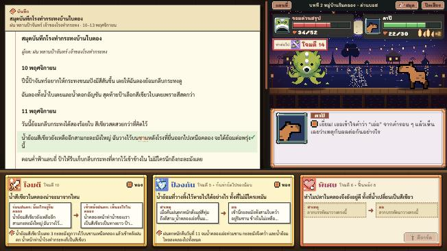
cards along the bottom, a long hint in every bubble
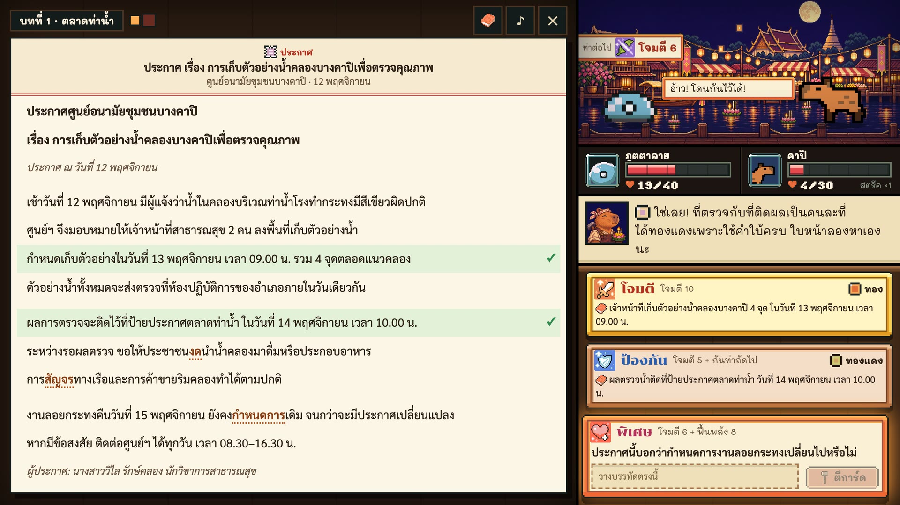
text left, fight and hand stacked on the right
Layout. Only the card in play is open, so a boss hand fits without scrolling.
Wording. About 120 lines of Kapi’s speech cut down to one idea per bubble.
Naming. “ม็อบ” reads as a protest crowd in Thai, so enemies became “ภูต”.
HONEST LIMITS
What the game does not do yet
A guesser can still finish
By using up the hint ladder, on bronze cards. We kept that path because it is the same one that lets a struggling reader finish. The play log shows it plainly.
Laptop only
Drag and drop on a wide screen, with the text and the fight side by side. Phones are not supported, so every tester needs a laptop.
Thai wording is still under review
The site went live before the team’s final check of the texts, hints and glosses. Invented place and office names also need a native read.
A small sample
Early playtests and a scripted bot. Enough to find usability problems, not enough to claim learning gains.
| Used for | Source | Licence |
|---|
| Ghosts, bosses, effects, icons, frames, sound and music | Ninja Adventure asset pack, by Pixel-Boy and AAA | CC0 |
| Kapi’s sprite | Capybara Sprite Sheet, by Rainloaf | CC0 |
| Backdrops, Kapi’s portrait, boss intro art | AI-generated from the team’s own prompts | Kling / Higgsfield |
| Typefaces | Sarabun, Chonburi and Mali, from Google Fonts | Open Font License |
| Code | Plain HTML, CSS and JavaScript, developed by Sila Ngamsangiam, hosted on Vercel | |
Reading framework: OECD, PISA 2018 Reading Framework.
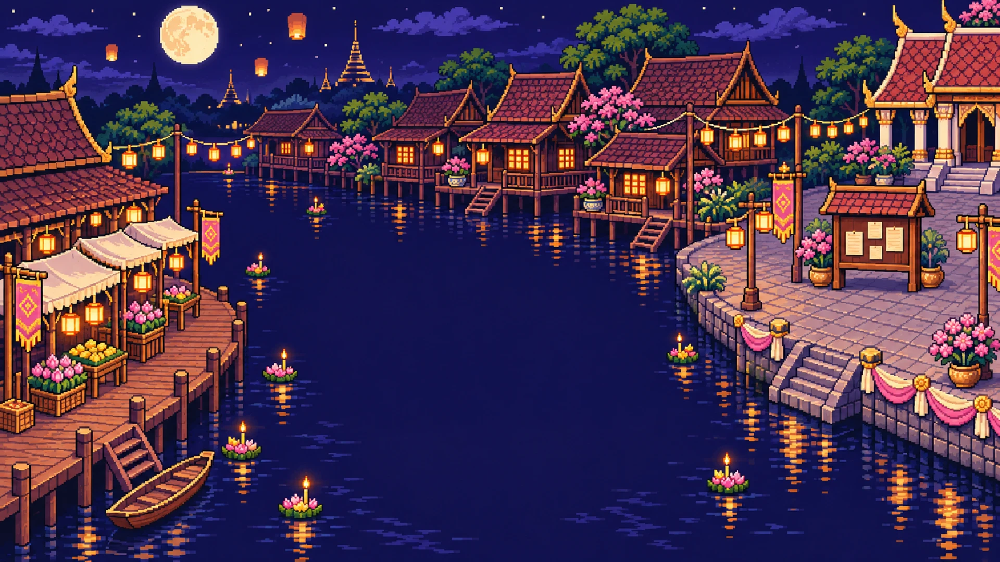
QUESTIONS
Read before you believe
อ่านก่อนเชื่อ
kapibarian.vercel.app